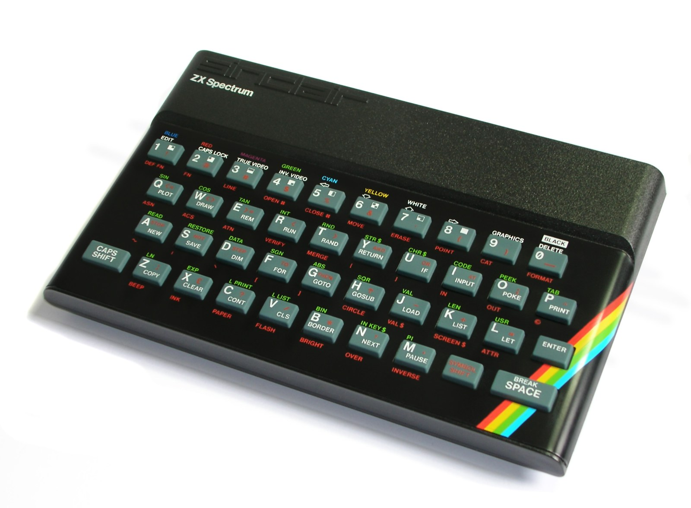

The Autopsy Report · Device #067
The Sinclair ZX Spectrum
Britain's home computer: a rubber keyboard, a rainbow stripe, and a custom chip nobody was allowed to fully document. Five million sold, one legendary color-clash. Architecture & history
What is this thing?
The ZX Spectrum is Sinclair Research's 8-bit home computer, released in April 1982 — the machine that put computing into British living rooms the way the C64 did American ones. It's famous for three things: the rubber "dead flesh" keyboard, the color graphics with attribute clash (colors assigned in 8×8 blocks, bleeding gloriously at the edges), and the ULA — a custom Ferranti gate-array chip that swallowed most of the computer's glue logic into one mysterious package. Over five million sold, and the machine credited with popularizing home computing and gaming in the UK. Architecture & history · Museum record
Not yet on our bench
No Spectrum has sat on our bench yet. No disassembly, no ULA inspection, no power-rail measurements, no original-unit photography. What we have instead is unusually good: Sinclair's own service manual, which documents the power supply, the trimmers, the test procedure, and the expected current draw in plain text. Everything below comes from that manual, the hardware wiki record, and Zilog's Z80 documentation. When a 48K lands on the bench, this page gets its second act.
A short history
- April 1982Sinclair Research releases the ZX Spectrum in 16K and 48K versions — an 8-bit Z80 machine with color graphics for £125/£175, undercutting nearly everything. The rubber keyboard becomes instantly iconic. Museum record · Architecture
- 1982–1984The 48K becomes the definitive model. Games load from cassette at 300 baud — three to five minutes a game, with the striped loading screen as a generation's shared memory. Storage
- Mid-1980sThe 128K "Toastrack" arrives with more memory and a real sound chip (the AY-3-8912) replacing the 1-bit beeper. Model notes
- Late 1980sThe +2 and +3 models continue the line under Amstrad's ownership, adding a built-in cassette deck and then a disk drive. Model notes
The outside
A 48K Spectrum is a small black wedge with a rainbow stripe and forty rubber keys. The back edge carries the whole I/O story: a 50-way edge connector exposing the full Z80 bus (printers, joysticks, disk drives, and the infamous wobbly RAM packs all hung off it), ear and mic 3.5 mm jacks for the cassette recorder, a TV/RF output — the original 48K talks to a television only through its UHF modulator, no composite video without modification — and the 9 V DC power inlet, center negative, fed by an unregulated wall wart. I/O & expansion · Maintenance

The board
Three chips tell the story. The Zilog Z80A runs at 3.5 MHz — the same CPU family as the machine's rivals, documented down to the cycle in Zilog's own manual. The Ferranti ULA is the Spectrum's soul and its mystery: a custom uncommitted-logic-array that handles video generation, keyboard scanning, cassette I/O, and the beeper, replacing dozens of TTL chips. And 16 KB of ROM holds Sinclair BASIC. Memory is 16 or 48 KB of DRAM — the kind that needs -5 V and +12 V rails, which is why the power section is more elaborate than you'd expect: 9 V unregulated in, a 7805 regulator making +5 V, and a TR4/TR5 inverter stage deriving +12 V and -5 V for the RAM. The service manual says a 48K draws about 700–900 mA. Video is 256×192 pixels, 15 colors (eight with a bright variant, plus black), with color attributes in 8×8 blocks — the famous clash. Sound on the 48K is a 1-bit beeper: the CPU toggles the speaker directly, and programmers made it sing anyway. Z80 user manual (PDF) · Service manual (PDF) · Architecture
Under the microscope: the chips
Confirmed means Sinclair's service manual, Zilog's documentation, or the hardware record says so. One honest gap is marked plainly.
| Chip | What it does | How we know | Dig deeper |
|---|---|---|---|
| Zilog Z80A @ 3.5 MHz |
The main processor — one of the most documented CPUs ever made. | Confirmed The hardware record; Zilog's own user manual covers the architecture. | Z80 user manual (PDF) |
| Ferranti ULA custom gate array |
Video, keyboard scan, cassette, beeper — most of the computer in one custom chip. | Likely The hardware record and service manual describe its role. We state plainly: no conventional public datasheet for the ULA exists. It was a custom Ferranti part; its behavior is documented by observation and by Sinclair's manual, not by a vendor datasheet. | Service manual (PDF) |
| 16 KB ROM | Sinclair BASIC and the system routines. | Confirmed The hardware record. | Architecture |
| 16/48 KB DRAM | Working memory — the 16K-to-48K upgrade was a factory option. | Confirmed The hardware record; the service manual's power section exists because this RAM needs ± rails. | Service manual (PDF) |
| LM1889 | Chroma modulator — part of the color video path the service manual's alignment procedure adjusts. | Confirmed Named in Sinclair's service manual (pins 17/18 probed during subcarrier adjustment). | Service manual (PDF) |
| 7805 regulator + TR4/TR5 inverter | Makes +5 V regulated, then +12 V and -5 V for the DRAM, from the 9 V wall wart. | Confirmed Sinclair's service manual, section 6. | Service manual (PDF) |
The government's file
Honest gap: the original Spectrum is a British machine, and we have not verified a US FCC filing for it. (The American Timex Sinclair 2068 is a different machine and doesn't count.) UK machines of the era were regulated under British standards, not the FCC system — so the absence isn't suspicious, it's geographical. No ID is claimed here.
Listening, not knocking
Our posture: we listen, we don't knock. For the Spectrum, the manufacturer's own service manual is the debug documentation — it names the trimmers (VR1, VR2 for color nulling; TC1, TC2 for the oscillators), the test points, and the expected voltages (+5 V ±0.25, -5 V, +12 V ±1.2). Documenting that these manufacturer service adjustments exist is the whole of this section; performing alignment is qualified bench work, not a reader procedure, and we present no instructions for it. The maintenance record adds the real-world failure modes to listen for: aging electrolytics (video noise, instability), keyboard membrane failure, ULA or RAM faults, edge-connector corrosion, and tired wall warts outputting the wrong voltage. When a 48K reaches our bench, the plan is visual inspection, rail-voltage checks against the manual's tolerances, and a cassette-load smoke test. Listening only. Service manual (PDF) · Maintenance
What we didn't do
- No bench work yet: no disassembly, no rail measurements, no ULA inspection, no original-unit photos.
- We claim no FCC ID — none verified, and none expected for a UK machine.
- We performed no alignment adjustments and publish no alignment procedure — the manual's trimmers are for qualified service.
- Nothing here touches credentials, keys, or locked functionality. The Spectrum has none.
By the numbers
- Machine: Sinclair ZX Spectrum — 16K/48K (1982), 128K, +2/+3 Museum record · Model notes
- CPU: Zilog Z80A @ 3.5 MHz Architecture
- Video: 256×192, 15 colors, 8×8 attribute blocks (the clash); RF/UHF output only on the 48K Architecture
- Sound: 1-bit beeper (48K); AY-3-8912 on the 128K Architecture
- Memory: 16/48 KB DRAM + 16 KB ROM Architecture
- Power: 9 V DC unregulated, center negative; ~700–900 mA (48K) Service manual (PDF)
- Scale: 5M+ sold Architecture & history
What awaits the bench
- A 48K of our own — board issue number, our photos, rail voltages against the manual's tolerances.
- ULA inspection and date codes — the mysterious chip, seen up close.
- A cassette-load smoke test at the documented 300 baud.
- Capacitor-health survey against the maintenance record's known-failure list.
- RF output captured on modern equipment — the way it actually looked on a 1982 television.
Words to know
Every term this page uses, in plain English. No prior knowledge required.
- ULA
- Uncommitted logic array — a custom chip where the manufacturer wires up a grid of generic gates for one job. The Spectrum's ULA does video, keyboard, cassette, and sound in one Ferranti package.
- Attribute clash
- The Spectrum assigns colors in 8×8 blocks, so a sprite crossing a color boundary drags the background color with it. A limitation that became an aesthetic.
- Beeper
- The 48K's 1-bit speaker, toggled directly by the CPU. One bit, infinite creativity.
- Edge connector
- The Spectrum's expansion port: bare gold fingers on the PCB edge exposing the whole Z80 bus. Powerful, and famously wobbly.
- RF/UHF modulator
- The circuit that turns the Spectrum's video into a TV-channel signal. The 48K's only video output.
- 7805
- A classic linear voltage regulator chip — 9 V in, 5 V out, and warm to the touch doing it.
- Baud
- Bits per second on a serial data link — the cassette interface's speed, measured in hundreds.
- Trimmer
- A tiny adjustable component on the board, set at the factory or in service — not a user control.
Sources & confidence
- Architecture, I/O, power input, video, sound: the hardware wiki record. High confidence.
- Launch date and museum context: the computing museum record. High confidence.
- Power supply design, current draw, trimmers, test points: Sinclair's service manual. High confidence.
- Z80 architecture: Zilog's user manual. High confidence.
- ULA: role confirmed; public datasheet honestly unavailable. Marked accordingly.
- FCC: no verified filing — stated as unknown, honestly.
- Anything not listed here is unknown until the bench says otherwise. We'll say so, out loud, when that's the case.
The device photo is a freely licensed stock photo, credited in its caption — not a photo of our own unit, because we don't have one yet.
Legal note. BareBoard is an educational project. Everything on this page is our own writing based on public documents — our summaries, our analysis. We don't publish, host, or distribute firmware, keys, passwords, or credentials. Product names and trademarks belong to their respective owners and appear here only to identify the hardware. If you believe anything here infringes your rights, contact us and we'll address it promptly.